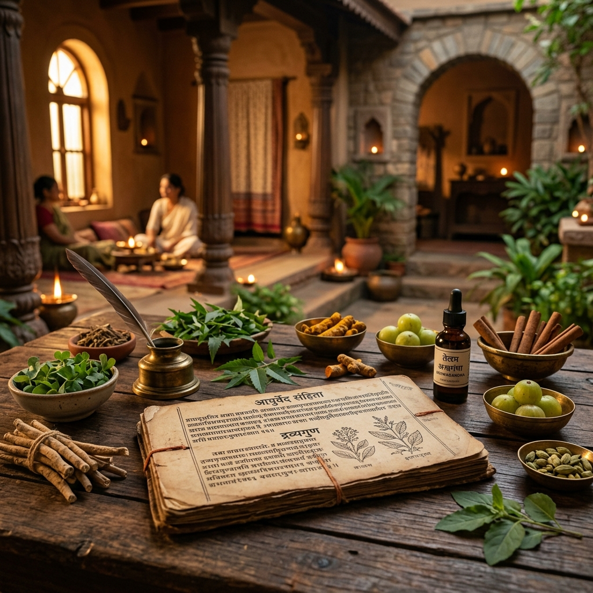

The Origins
Centuries ago, deeply embedded in the tranquil forests of the East, sages transcribed the secrets of nature into ancient texts. The Ayusha philosophy was born from these forgotten manuscripts.
We believe that true healing cannot be manufactured. Every oil, every herb, and every element used at Ayusha is meticulously sourced directly from untouched forests.
While our roots are ancient, our vision is modern. We transformed the raw essence of Ayurveda into an ultra-premium sanctuary. A place where the stressful noise fades away.